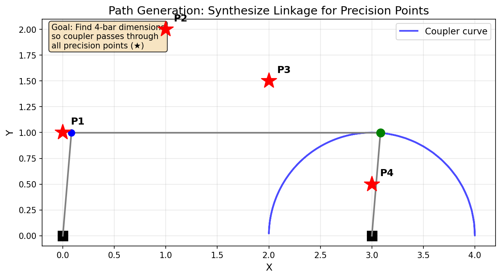
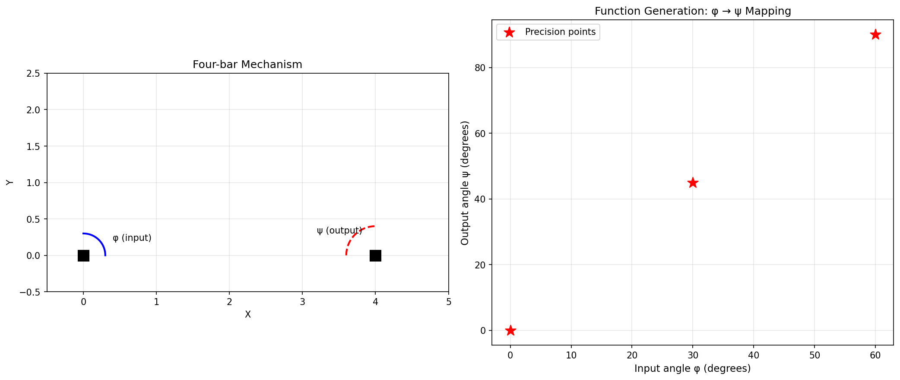
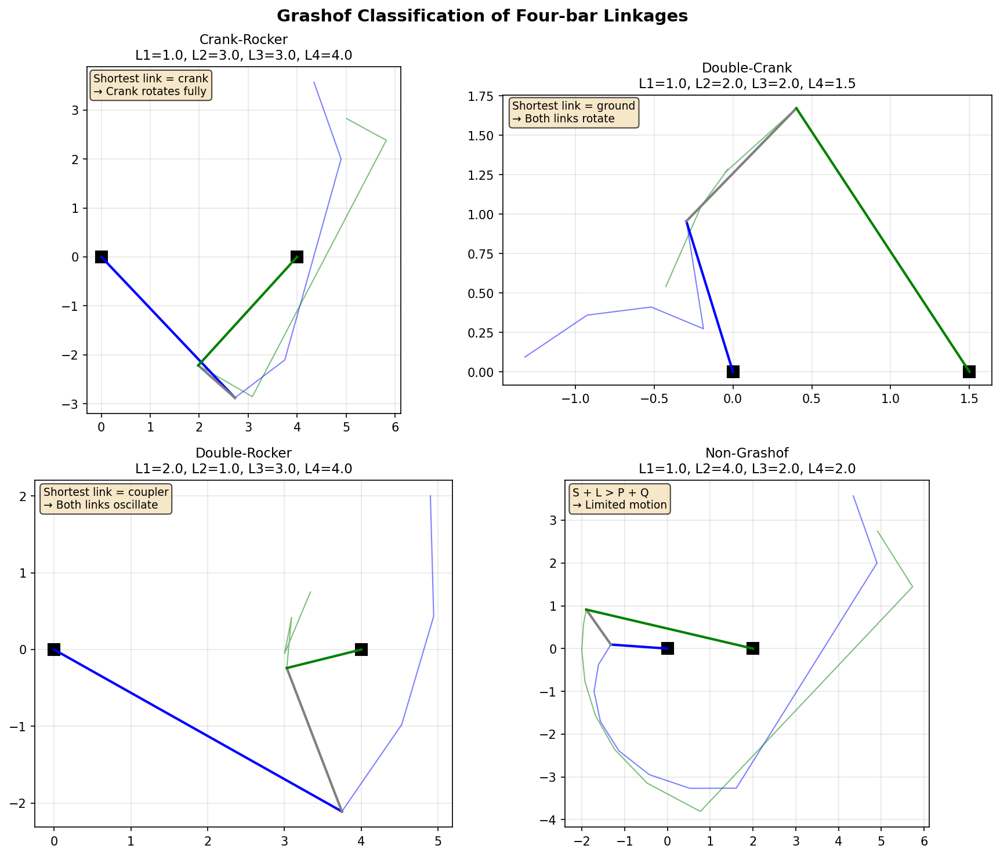

Linkage Synthesis
This tutorial covers classical mechanism synthesis methods for designing four-bar linkages that achieve specific motion requirements. Instead of optimizing an existing linkage, synthesis methods compute linkage dimensions directly from your specifications.
Overview
Pylinkage implements three classical synthesis approaches:
Function Generation: Design a linkage where input crank angle maps to a specific output rocker angle relationship.
Path Generation: Design a linkage where a coupler point traces through specified precision points.
Motion Generation: Design a linkage where a coupler body passes through specified poses (position + orientation).
All methods are based on Burmester theory and Freudenstein’s equation, classical results from kinematic synthesis.
{kind=link}

Path generation: find a four-bar linkage whose coupler passes through specified precision points (red stars).
Quick Start: Path Generation
The most common use case is designing a linkage where the coupler traces a specific path:
from pylinkage.synthesis import path_generation
import pylinkage as pl
# Define points the coupler should pass through
precision_points = [
(0.0, 1.0),
(1.0, 2.0),
(2.0, 1.5),
(3.0, 0.5),
]
# Find linkages that achieve this path
result = path_generation(precision_points)
print(f"Found {len(result.solutions)} candidate solutions")
# Visualize the first solution
if result.solutions:
linkage = result.solutions[0]
pl.show_linkage(linkage)
Expected output:
Found 10 candidate solutions
The synthesis returns multiple candidate linkages because the mathematical
problem typically has several solutions; max_solutions (default 10)
caps how many are kept.
Animating a Solution
result.solutions holds ready-to-simulate Linkage objects, but by
default synthesis keeps every Grashof linkage, including double-rockers whose
crank cannot turn fully. show_linkage drives the crank through a full
turn and stops at the first position that cannot be assembled. Ask for
crank-rockers only (require_crank_rocker=True), or let the crank sweep
just its reachable range:
import math
from pylinkage.synthesis import crank_angle_limits, solution_to_linkage
def show(result, index=0):
"""Animate one solution, oscillating the crank when it cannot turn fully."""
raw = result.raw_solutions[index]
limits = crank_angle_limits(
raw.crank_length, raw.coupler_length, raw.rocker_length, raw.ground_length
)
linkage = result.solutions[index]
if limits is not None:
lo, hi = (math.degrees(a) for a in limits)
print(f"crank oscillates between {lo:.1f} and {hi:.1f} deg")
linkage = solution_to_linkage(raw._replace(arc_limits=limits), name=linkage.name)
pl.show_linkage(linkage)
show(result)
With arc_limits set, solution_to_linkage builds the linkage around an
ArcCrank instead of a Crank. The rest of this tutorial uses show().
Function Generation
Function generation designs a linkage where the input crank angle maps to a specific output rocker angle. This is useful for mechanisms that need to transform rotational motion with a specific ratio.
Theory: Freudenstein’s Equation
For a four-bar linkage with links of lengths \(L_1\) (crank), \(L_2\) (coupler), \(L_3\) (rocker), and \(L_4\) (ground), Freudenstein’s equation relates input angle \(\phi\) to output angle \(\psi\):
where:
Given 3 input/output angle pairs, we can solve for \(K_1, K_2, K_3\) and thus determine the link ratios.
Example: Three Precision Points
import math
from pylinkage.synthesis import function_generation
import pylinkage as pl
# Define input/output angle pairs (phi, psi) in radians, measured from
# the ground line. The rocker is to turn half as fast as the crank.
angle_pairs = [
(math.radians(90), math.radians(100)), # Position 1
(math.radians(120), math.radians(115)), # Position 2
(math.radians(150), math.radians(130)), # Position 3
]
# Synthesize the linkage; lengths are relative to the ground link
result = function_generation(angle_pairs, ground_length=2.0)
if result.solutions:
print(f"Found {len(result.solutions)} solutions")
for i, sol in enumerate(result.raw_solutions):
print(f"\nSolution {i + 1}:")
print(f" Crank length (L1): {sol.crank_length:.4f}")
print(f" Coupler length (L2): {sol.coupler_length:.4f}")
print(f" Rocker length (L3): {sol.rocker_length:.4f}")
print(f" Ground length (L4): {sol.ground_length:.4f}")
# Visualize the first solution
linkage = result.solutions[0]
show(result)
else:
print("No valid solutions found")
for warning in result.warnings:
print(f"Warning: {warning}")
Expected output:
Found 1 solutions
Solution 1:
Crank length (L1): 1.1694
Coupler length (L2): 1.9345
Rocker length (L3): 2.2873
Ground length (L4): 2.0000
Three angle pairs determine the three Freudenstein coefficients exactly, so
there is one solution up to scale. Not every set of pairs corresponds to a
real four-bar: when the fit yields a negative link length the result is
empty and result.warnings says so. Pairs starting near 0 degrees are the
usual culprit.
{kind=link}

Function generation: the left plot shows the mechanism at different input angles, the right plot shows the input-output angle relationship.
Verifying Function Generation
You can verify that the synthesized linkage achieves the desired angle mapping:
from pylinkage.synthesis import verify_function_generation
# Check if synthesized linkage achieves the angle pairs
is_valid, errors = verify_function_generation(linkage, angle_pairs)
print(f"Verification {'passed' if is_valid else 'failed'}:")
for i, ((phi, psi), error) in enumerate(zip(angle_pairs, errors)):
print(f" Point {i+1}: phi={math.degrees(phi):.1f}°, "
f"psi={math.degrees(psi):.1f}°, error={math.degrees(error):.4f}°")
Path Generation
Path generation finds linkages where a coupler point traces through specified positions. Unlike function generation, the coupler orientation at each point is not specified, making this problem more complex.
Theory: Burmester Curves
Burmester theory identifies all possible fixed pivot locations (center points) and moving pivot locations (circle points) such that the moving pivot traces circular arcs through the precision positions. By selecting compatible pairs of dyads (ground-coupler connections), we can construct four-bar linkages.
Basic Path Generation
from pylinkage.synthesis import path_generation
import pylinkage as pl
# Four precision points define the path
points = [
(0.0, 0.0),
(2.0, 1.0),
(4.0, 0.5),
(5.0, -1.0),
]
result = path_generation(points, max_solutions=3)
print(f"Found {len(result.solutions)} solutions")
print(f"Warnings: {result.warnings}")
# Examine each solution
for i, (linkage, raw) in enumerate(zip(result.solutions, result.raw_solutions)):
print(f"\nSolution {i + 1}:")
# Link lengths from the raw solution
print(f" Crank {raw.crank_length:.3f}, coupler {raw.coupler_length:.3f}, "
f"rocker {raw.rocker_length:.3f}, ground {raw.ground_length:.3f}")
# The Linkage's own constraints: crank radius, the two RRRDyad
# distances, then the coupler point's distance and angle
constraints = [round(float(c), 3) for c in linkage.get_constraints()]
print(f" Constraints: {constraints}")
Example result (may vary):
Found 3 solutions
Warnings: ['299 candidate(s) rejected: coupler point did not pass through all precision points (assembly-mode mismatch).']
Solution 1:
Crank 3.843, coupler 4.560, rocker 1.799, ground 0.770
Constraints: [3.843, 4.56, 1.799, 1.02, -0.342]
The last component of every path-generation linkage is a FixedDyad
named P: the coupler point that traces the path. Its locus is
[step[-1] for step in linkage.step()].
Path Generation with Timing
Sometimes you need the coupler to reach each point at a specific crank angle.
Use path_generation_with_timing:
import math
from pylinkage.synthesis import path_generation_with_timing
# The same points, each with the crank angle at which to reach it
crank_angles = [0.0, math.pi / 2, math.pi, 3 * math.pi / 2]
result = path_generation_with_timing(points, crank_angles)
if result.solutions:
print(f"Found {len(result.solutions)} timed solutions")
Motion Generation
Motion generation is the most constrained synthesis type: the coupler body must pass through specified poses (position AND orientation).
Theory
For motion generation, we specify poses \((x, y, \theta)\) where \(\theta\) is the coupler orientation. Burmester theory then finds attachment points on the coupler that trace circular arcs compatible with fixed pivots on the ground.
Three-Pose Synthesis
With exactly 3 poses, the solution is typically unique (or a small set):
from pylinkage.synthesis import motion_generation, Pose
import pylinkage as pl
# Define poses: (x, y, orientation angle in radians)
poses = [
Pose(x=0.0, y=0.0, angle=0.0),
Pose(x=2.0, y=1.0, angle=0.3),
Pose(x=3.0, y=0.5, angle=0.6),
]
result = motion_generation(poses)
print(f"Found {len(result.solutions)} solutions")
if result.solutions:
linkage = result.solutions[0]
print("\nLinkage configuration:")
for component in linkage.components:
print(f" {component.name}: ({component.x:.2f}, {component.y:.2f})")
show(result)
Example output (the solution curve is sampled, so values vary):
Found 10 solutions
Linkage configuration:
A: (2.77, -0.73)
D: (2.52, -0.17)
B: (0.91, -0.00)
C: (0.86, 0.31)
P: (0.00, -0.00)
A and D are the ground pivots, B the crank pin, C the
coupler-rocker pin and P the guided body’s reference point, which sits
on the first pose.
Four-Pose and Five-Pose Synthesis
With more poses, the problem becomes over-constrained, requiring least-squares or iterative methods:
from pylinkage.synthesis import motion_generation, Pose
poses = [
Pose(0.0, 0.0, 0.0),
Pose(1.0, 0.5, 0.2),
Pose(2.0, 0.8, 0.4),
Pose(3.0, 0.6, 0.6),
]
# With four poses the circle points reduce to Burmester's curve, with
# five to at most four Burmester points; motion_generation handles both.
result = motion_generation(poses)
if result.solutions:
print(f"Found {len(result.solutions)} solutions")
else:
print("No solution; five poses in particular are often unreachable")
for warning in result.warnings:
print(f" {warning}")
Working with Synthesis Results
All synthesis functions return a SynthesisResult object:
from pylinkage.synthesis import path_generation
result = path_generation(points)
# Check if solutions were found
if result.solutions:
print("Solutions found!")
# Number of solutions
print(f"Count: {len(result.solutions)}")
# Iterate over linkages
for linkage in result.solutions:
print(linkage.name)
# Or take them as an Ensemble: batch simulation, ranking by link
# lengths, filtering, and visualization in one object
ensemble = result.ensemble
print(f"{ensemble.n_members} members, scores {list(ensemble.scores)}")
shortest_crank = ensemble.rank("crank_length")[0]
print(f"Shortest crank: {shortest_crank.scores['crank_length']:.3f}")
# Access the underlying solutions with full parameters
for sol in result.raw_solutions:
print(f"Crank: {sol.crank_length}")
print(f"Coupler: {sol.coupler_length}")
print(f"Rocker: {sol.rocker_length}")
print(f"Ground: {sol.ground_length}")
# Check for warnings
for warning in result.warnings:
print(f"Warning: {warning}")
Creating Linkages from Dimensions
If you already know the link lengths, create a four-bar directly:
from pylinkage.synthesis import fourbar_from_lengths
import pylinkage as pl
linkage = fourbar_from_lengths(
crank_length=1.0,
coupler_length=3.0,
rocker_length=3.0,
ground_length=4.0,
)
# Check Grashof condition
from pylinkage.synthesis import grashof_check, is_crank_rocker
grashof = grashof_check(1.0, 3.0, 3.0, 4.0)
print(f"Grashof type: {grashof.name}")
if is_crank_rocker(1.0, 3.0, 3.0, 4.0):
print("This is a crank-rocker mechanism")
pl.show_linkage(linkage)
Expected output:
Grashof type: GRASHOF_CRANK_ROCKER
This is a crank-rocker mechanism
Grashof Analysis
The Grashof criterion determines the type of motion a four-bar can achieve:
{kind=link}

The four types of four-bar linkages based on the Grashof criterion: crank-rocker, double-crank, double-rocker, and non-Grashof.
from pylinkage.synthesis import grashof_check, GrashofType, is_grashof
# Link lengths: crank, coupler, rocker, ground
L1, L2, L3, L4 = 1.0, 3.0, 3.0, 4.0
# Check if Grashof (shortest + longest <= sum of other two)
print(f"Is Grashof: {is_grashof(L1, L2, L3, L4)}")
# Get specific type
grashof_type = grashof_check(L1, L2, L3, L4)
if grashof_type == GrashofType.GRASHOF_CRANK_ROCKER:
print("Crank makes full rotations, rocker oscillates")
elif grashof_type == GrashofType.GRASHOF_DOUBLE_CRANK:
print("Both crank and rocker make full rotations")
elif grashof_type == GrashofType.GRASHOF_ROCKER_CRANK:
print("Rocker makes full rotations, crank oscillates")
elif grashof_type == GrashofType.GRASHOF_DOUBLE_ROCKER:
print("Coupler makes full rotations, crank and rocker oscillate")
elif grashof_type == GrashofType.CHANGE_POINT:
print("Change-point mechanism (special case)")
else:
print("Non-Grashof: no link can rotate fully")
Advanced: Burmester Curve Analysis
For research or advanced applications, access the underlying Burmester computations:
from pylinkage.synthesis import (
compute_all_poles,
compute_circle_point_curve,
select_compatible_dyads,
Pose,
)
poses = [
Pose(0, 0, 0),
Pose(1, 1, 0.5),
Pose(2, 0.5, 1.0),
]
# Compute relative rotation poles between poses, as complex numbers
poles = compute_all_poles(poses)
print(f"Poles: {poles}")
# Compute the circle-point and center-point curves (loci of valid
# attachment points on the body and on the ground)
curves = compute_circle_point_curve(poses)
print(f"{len(curves.circle_curve)} sampled circle points")
# Select compatible dyad pairs to form a complete 4-bar
dyads = select_compatible_dyads(curves, max_pairs=20)
print(f"Found {len(dyads)} compatible dyad pairs")
left, right = dyads[0]
print(f"First pair: link lengths {left.link_length:.3f} and {right.link_length:.3f}")
Synthesis vs Optimization
When to use synthesis:
You have specific precision requirements (exact points/angles to hit)
You want mathematically optimal solutions (not approximations)
The problem fits the classical synthesis framework (3-5 positions)
When to use optimization (PSO):
You have a complex objective function (not just precision points)
You need to optimize for velocity, acceleration, or other properties
The problem doesn’t fit classical synthesis patterns
You want to explore a wide design space
You can also combine both approaches: use synthesis to get a good starting point, then use PSO to fine-tune for additional objectives.
from pylinkage.synthesis import path_generation
import pylinkage as pl
# Step 1: Synthesize initial design
points = [(0, 0), (1, 1), (2, 0.5), (3, -0.5)]
result = path_generation(points)
if result.solutions:
linkage = result.solutions[0]
# Step 2: Fine-tune with PSO for additional objectives
@pl.kinematic_minimization
def combined_fitness(loci, **kwargs):
# Precision point error
output_path = [step[-1] for step in loci]
point_error = sum(
min((p[0]-t[0])**2 + (p[1]-t[1])**2 for p in output_path)
for t in points
)
# Additional: minimize mechanism size
all_points = [p for step in loci for p in step]
bbox = pl.bounding_box(all_points)
size = (bbox[1] - bbox[3]) * (bbox[2] - bbox[0])
return point_error + 0.1 * size
# Search close to the synthesized design
bounds = pl.generate_bounds(
linkage.get_constraints(), min_ratio=1.2, max_factor=1.2,
)
optimized = pl.particle_swarm_optimization(
eval_func=combined_fitness,
linkage=linkage,
bounds=bounds,
order_relation=min,
n_particles=30,
iterations=30,
verbose=False,
)
print(f"Fine-tuned score: {optimized[0].score:.4f}")
optimized.show(0)
Next Steps
Symbolic Computation - Use symbolic computation for analytical solutions
Advanced Optimization Techniques - Combine synthesis with PSO optimization
See
pylinkage.synthesisfor complete API reference